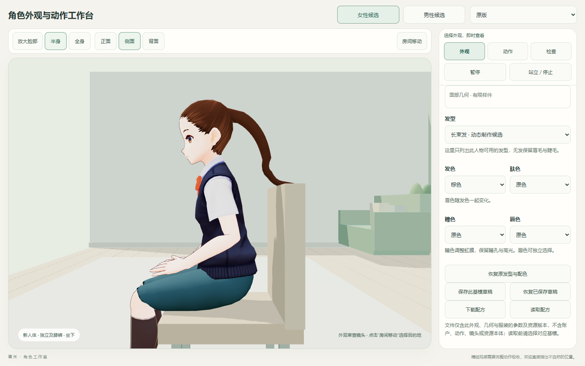


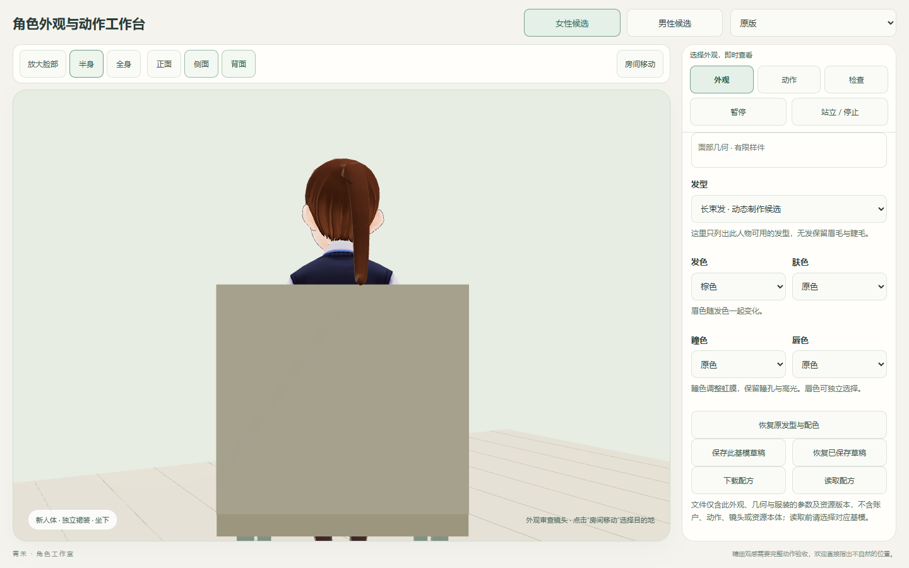
构建 e9bd472be0f8 · 源码 3934f9e1bde3bf6c1b07f2cf848489108fd5a21b · 技术动作已完成，接触与观感仍需审查。
本版官方 avatar-scene spring reference 按设计移除根移动惯性。接触数值是每200ms实际蒙皮顶点的椅子OBB诊断，坐稳快照与过程采样时间不同。椅背接触、局部折弯与连续动作完整观感仍待主线审查，任意多盒碰撞不作保证，未作零穿模或人工通过结论。 记录使用原女性、指定长发、既有裤装与裙装，以及原椅和移位转向后的椅子。
每 200 ms 采样实际蒙皮后顶点是否位于椅子 OBB 内。下表保留各阶段峰值，局部盒内深度仅描述盒体采样，完整三角穿透与连续碰撞仍未验证。
完整原始报告 · 原始诊断汇总 · 源文件 SHA 与抽帧索引 · 包装脚本
| 阶段 | 采样次数 | OBB 内顶点峰值 | 局部盒内深度峰值（mm） |
|---|---|---|---|
| 原裤装 / 原椅 | 40 | 5 | 1.87 |
| 裙装 / 移位转向椅 | 41 | 6 | 1.13 |
历史363-v1 期望 SHA 录入错误，被实时主角色身份门禁拒绝。 原始失败记录
历史363-v2 在空间不足的位置使用默认舞蹈，任务返回 insufficient-dance-space。 原始失败记录
历史363-v3 明确在安全位置 (−0.5, 1.8) 使用既有 dance-technical-once-v1 并完成任务。各次证据保留自身结果。
原始 solverTimes 实际计量 appearance.updateDynamics 调用，未包含衣物更新和渲染。rAF 间隔保留在诊断汇总中。开发机录制同时运行视频和几何诊断，普通电脑尚未验证。约 0.1 ms 的计时量化会产生零值，零值不能解释为零开销。
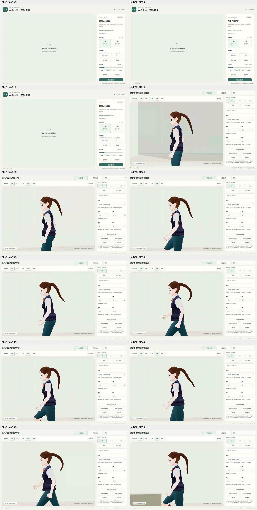
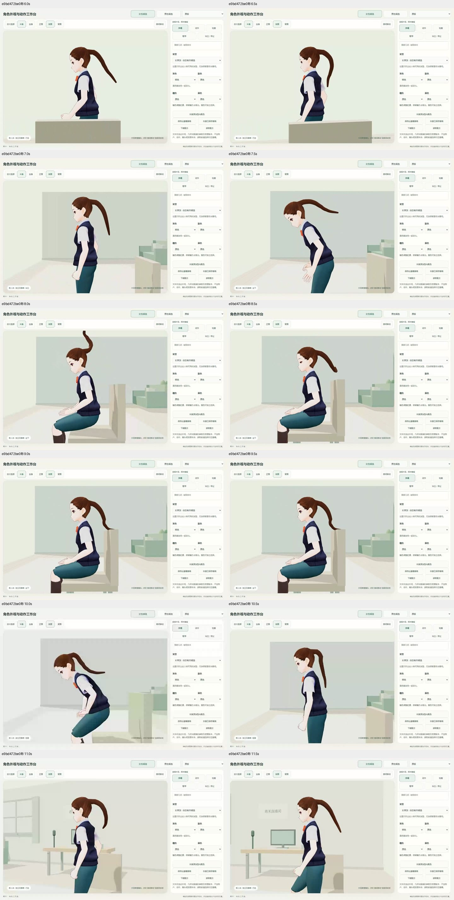
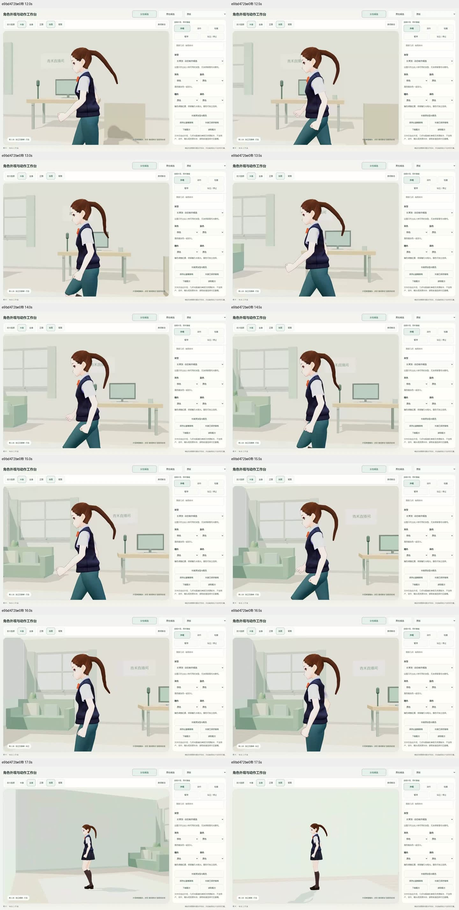
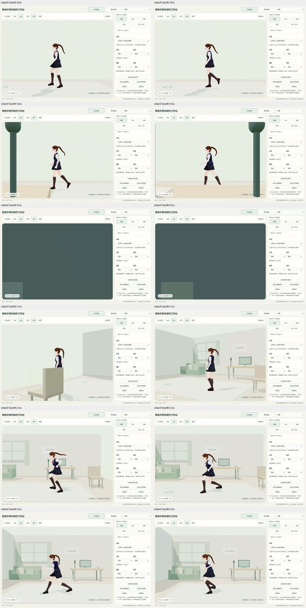
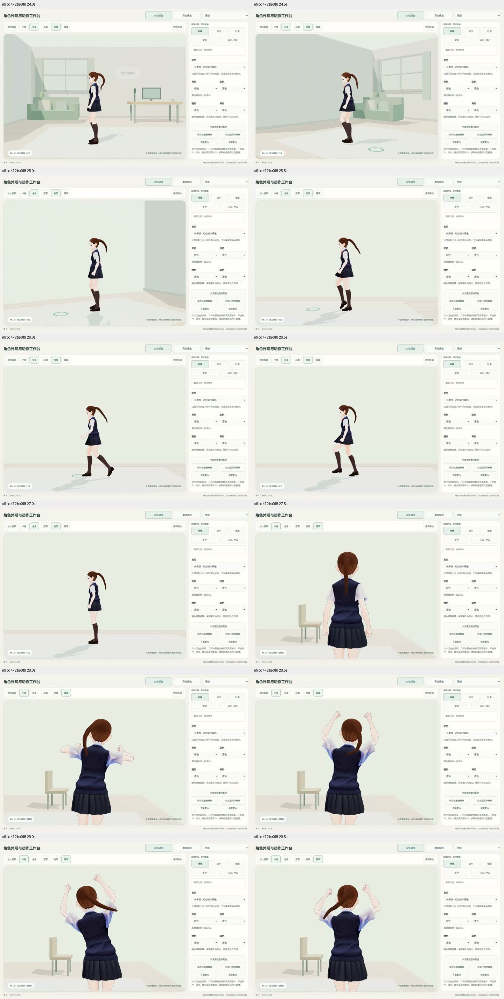
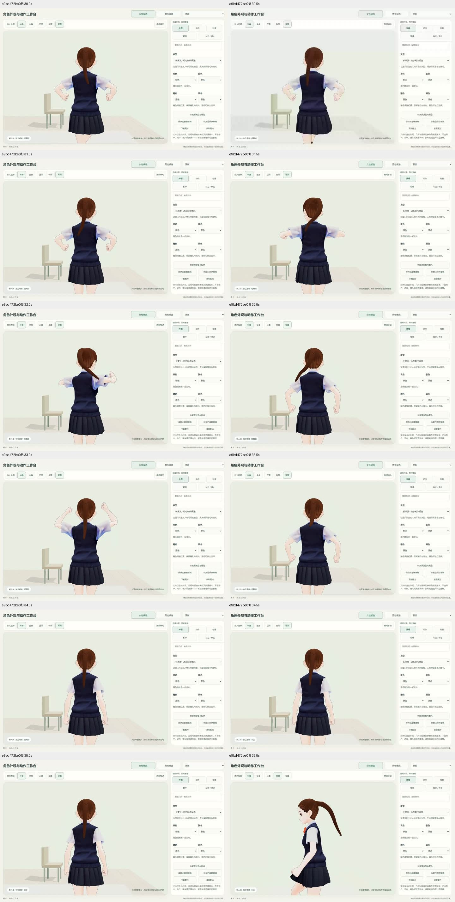
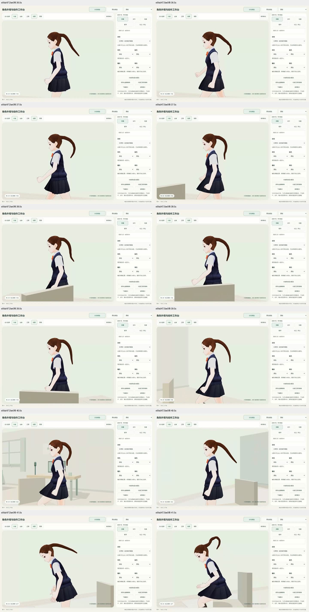
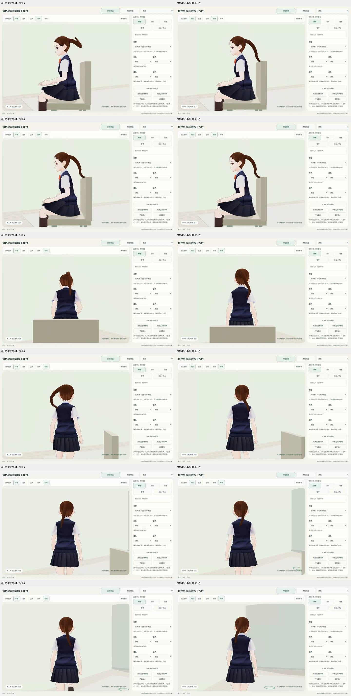
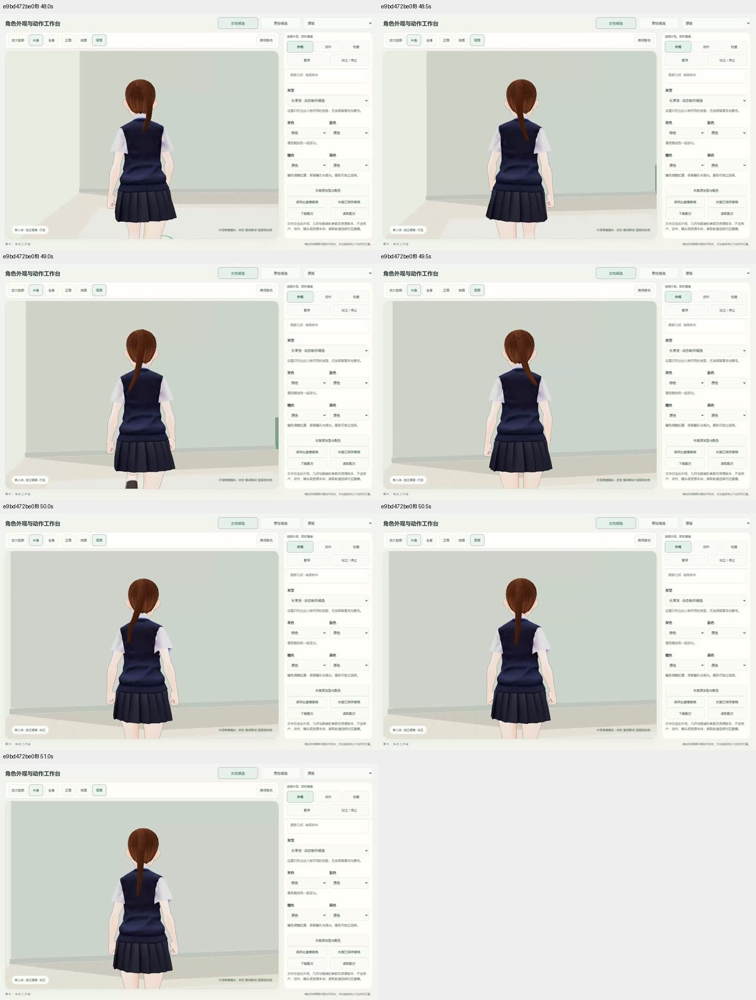